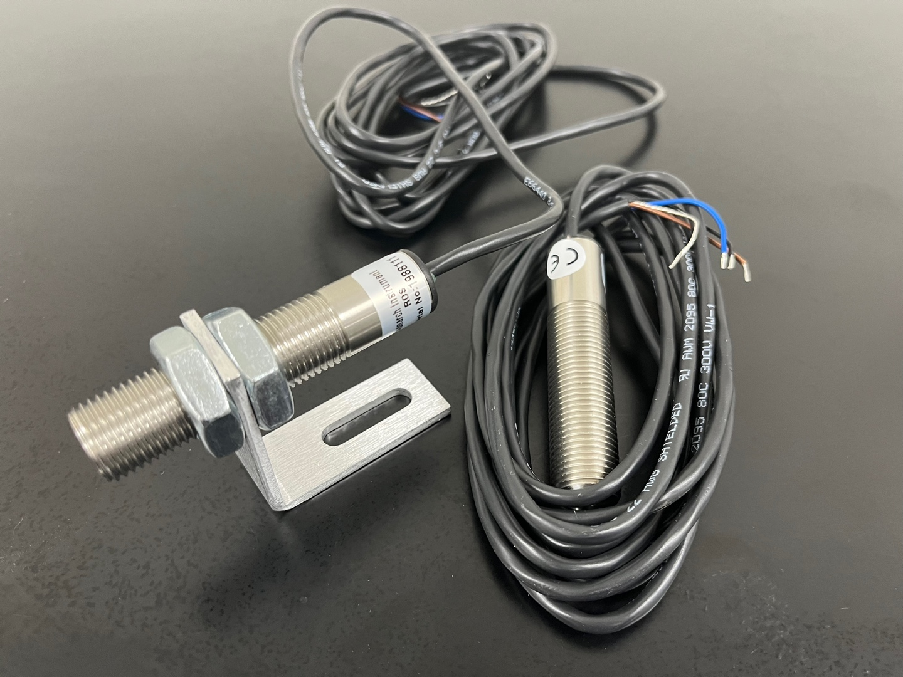
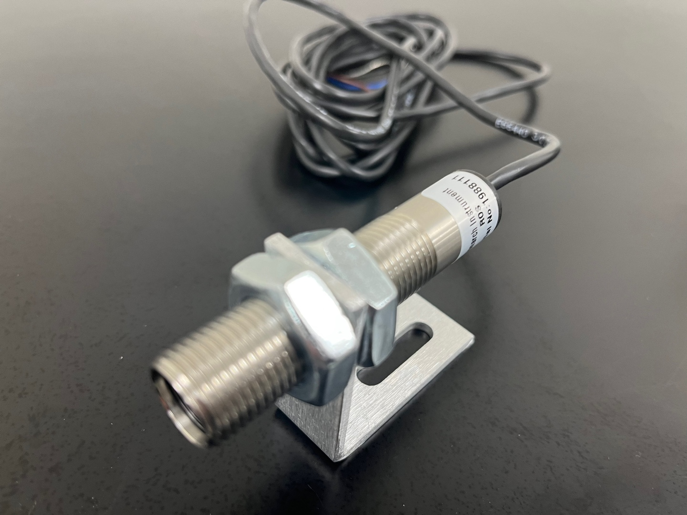
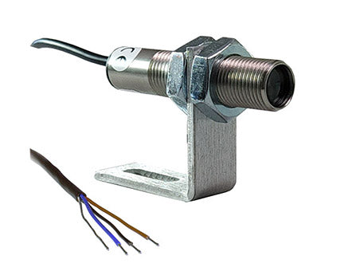
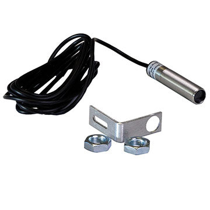
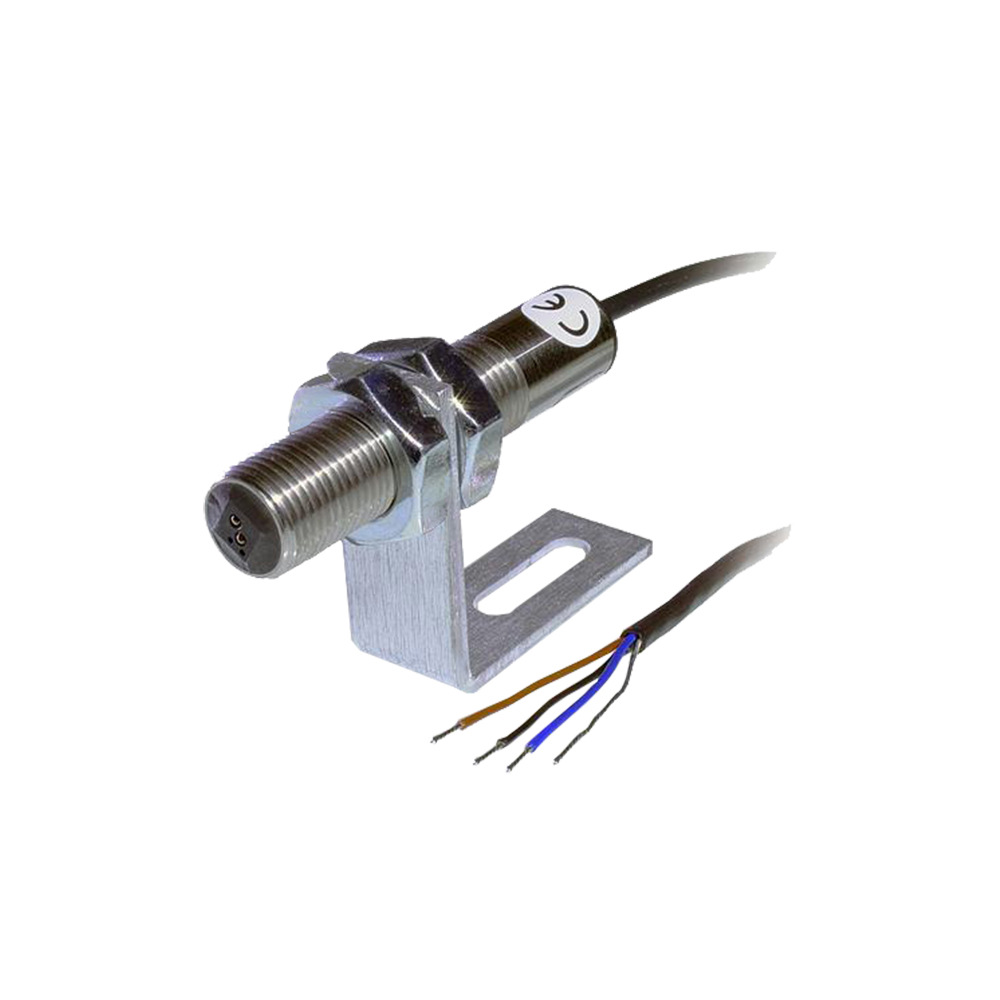
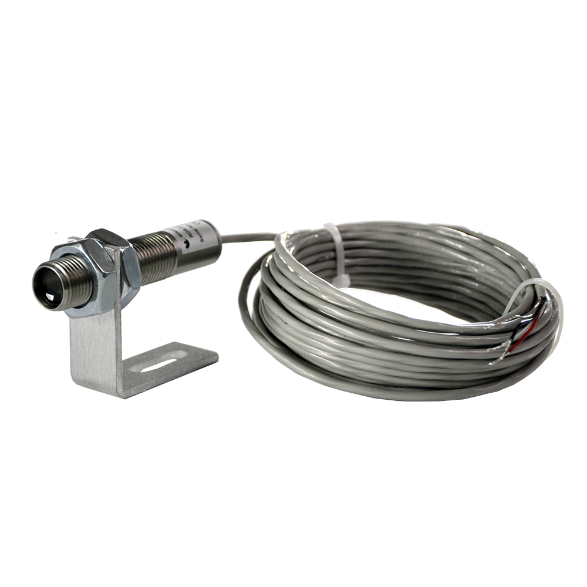

비접촉식 RPM 측정센서
(타코미터)
회전체에 접촉하지 않고 회전속도(RPM)를 측정하는 타코미터용 센서 전 방식 — 가시광 LED·변조 LED·레이저·방수형 레이저·유도형(스파크플러그)·적외선·고온형·스마트 디지털 레이저 옵티컬 센서까지. 방식별 사양 비교와 선정 기준을 씨앤디테크가 정리합니다.
비접촉식 RPM 측정 원리
비접촉식 RPM 센서는 적외선, 마그네틱(유도형), 옵티컬(LED·레이저), 초음파, 캐퍼시티브, 진동 방식 등 감지 원리에 따라 다양하게 구분됩니다. 이 중 현장에서 가장 손쉽게 적용할 수 있는 방식이 옵티컬 센서와 적외선 센서입니다. 옵티컬·레이저 센서는 광원이 회전 타깃(반사테이프 등)에서 반사되어 돌아오는 빛을 감지해 펄스 신호로 변환하고, 적외선 센서는 물체가 회전하며 변화하는 반사광을 감지해 RPM을 계산합니다. 회전체를 직접 건드리지 않아 고속·고온·협소 공간에서도 안전하고 정밀하게 회전속도를 측정할 수 있습니다.
비접촉식 RPM 센서 방식별 라인업
측정 거리, RPM 범위, 사용 환경(고온·방수·엔진 점화계 등)에 따라 8가지 방식의 비접촉 RPM 센서 중 최적 모델을 선택할 수 있습니다.

가시광 LED 옵티컬 센서
범용 리모트 옵티컬 센서
가시광 적색 LED를 광원으로 사용하는 가장 널리 쓰이는 비접촉 RPM 센서. 나사형 스테인리스 하우징에 폰플러그 또는 틴드와이어 단자를 선택할 수 있어 설치가 간편합니다.
- 측정범위1-250,000 RPM
- 작동거리최대 0.9 m, 45° 이내
- 전원3.0-15 Vdc @ 40 mA
- 출력네거티브 펄스
- 케이블2.4 m / 7.6 m

변조 LED 옵티컬 센서
고주변광 차단형 옵티컬 센서
LED 광원을 변조(Modulated)해 반사된 신호만 선별 처리하고 그 외 주변광은 걸러내는 방식. 조명이 강한 현장이나 야외처럼 주변광 간섭이 심한 곳에 적합합니다.
- 측정범위1-20,000 RPM
- 작동거리2.5 cm ~ 0.6 m, 45° 이내
- 전원5.0-24 Vdc @ 50 mA
- 케이블2.4 m / 6.7 m
- 용도고주변광 환경

가시광 레이저 센서
표준형 리모트 레이저 센서
지향성이 강한 가시광 레이저(650nm, Class 2)로 원거리에서도 타깃을 정확히 조준. LED 방식보다 넓은 작동거리가 필요한 현장에 적합합니다.
- 측정범위1-250,000 RPM
- 레이저Class 2, 650nm, 1mW 이하
- 작동거리최대 7.6 m, 60° 이내
- 전원3.3-15 Vdc / 24 Vdc
- On-TargetLED 표시 내장

방수형 러기드 레이저 센서
IP67 등급 산업현장용 레이저 센서
316L 스테인리스 하우징과 방수 커넥터를 적용한 IP67 등급 레이저 센서. 분진·수분·오염이 있는 산업현장에서도 렌즈만 세척하면 재사용할 수 있습니다.
- 측정범위1-250,000 RPM
- 등급IP67
- 작동거리최대 7.6 m
- 전원4-15 Vdc / 10-24 Vdc
- 재질316L 스테인리스 + ABS
유도형 스파크플러그 센서
전자기 유도 방식 엔진 RPM 센서
점화 케이블에 클립으로 장착해 점화 시점의 전자기 신호를 감지하는 방식. 반사테이프나 타깃 부착 없이 내연기관의 RPM을 바로 측정할 수 있습니다. 전용 앰프 모듈과 함께 사용합니다.
- 측정범위1-99,999 RPM
- 작동거리코일에서 2.5~30.5 cm
- 전원3.3-24 Vdc (앰프 입력)
- 온도범위-54 ~ 107 °C
- 구성센서 + 앰프 모듈

적외선 광센서
초고속 회전체용 적외선 센서
비가시 적외선 LED로 대비되는 명암·색상 표면을 감지. 8방식 중 가장 넓은 RPM 대역을 지원해 터빈·정밀 스핀들 등 초고속 회전체 측정에 적합합니다.
- 측정범위1-1,000,000 RPM
- 작동거리최대 12.7 mm
- 전원3.3-15 Vdc @ 40 mA
- 온도범위-40 ~ 85 °C
- 타깃명암 대비 표면 / 차단 방식

고온형 광학 센서
내열 리모트 옵티컬 센서
백열램프 광원과 파이렉스 유리 렌즈를 적용해 최대 125°C 고온 환경에서도 동작. 자동차·트럭 냉각계통 시험처럼 열원 인근에서 RPM을 측정해야 할 때 사용합니다.
- 측정범위1-50,000 RPM
- 온도범위-25 ~ 125 °C
- 작동거리최대 0.76 m, 30° 이내
- 전원6-24 Vdc @ 48 mA
- 케이블7.6 m (25 ft)
스마트 디지털 레이저 센서
독립형 디지털 레이저 RPM 센서
버튼 하나로 동작하는 독립형(Self-contained) 레이저 센서. 최대 19.8m 원거리에서도 측정 가능하며 IP64 등급으로 분진·습기가 있는 환경에도 사용할 수 있습니다.
- 측정범위1-500,000 RPM
- 레이저Class 3R, 650nm, 3mW 이하
- 작동거리최대 19.8 m
- 출력TTL 0-3.0 V 펄스
- 등급IP64, 원버튼 조작
방식별 사양 한눈에 비교
측정 범위와 작동거리를 기준으로 현장에 맞는 방식을 빠르게 선택하세요.
| 방식 | 측정범위 | 작동거리 | 전원 | 주요 용도 |
|---|---|---|---|---|
| 가시광 LED 옵티컬 | 1-250,000 RPM | ~0.9 m | 3.0-15 Vdc | 범용 근거리 측정 |
| 변조 LED 옵티컬 | 1-20,000 RPM | 2.5cm~0.6 m | 5.0-24 Vdc | 고주변광 환경 |
| 가시광 레이저 | 1-250,000 RPM | ~7.6 m | 3.3-15 / 24 Vdc | 원거리 표준 측정 |
| 방수형 러기드 레이저 | 1-250,000 RPM | ~7.6 m | 4-15 / 10-24 Vdc | IP67, 분진·수분 환경 |
| 유도형 스파크플러그 | 1-99,999 RPM | 2.5~30.5 cm | 3.3-24 Vdc | 엔진 점화계 RPM |
| 적외선 | 1-1,000,000 RPM | ~12.7 mm | 3.3-15 Vdc | 초고속 회전체 |
| 고온형 광학 | 1-50,000 RPM | ~0.76 m | 6-24 Vdc | 125°C 고온 환경 |
| 스마트 디지털 레이저 | 1-500,000 RPM | ~19.8 m | 5 Vdc | 독립형, 초원거리 |
적용 분야
씨앤디테크가 공급한 비접촉식 RPM 센서의 주요 적용 현장입니다.
회전기계 RPM 점검
가시광 LED·레이저 센서로 모터·펌프·팬 등 회전설비의 실제 회전속도를 현장에서 즉시 확인, 설정값과 실측값을 비교합니다.
발란싱 기준신호
레이저·옵티컬 센서의 TTL 펄스 출력을 발란싱 장비나 진동분석기의 위상 기준신호로 사용해 회전체 불평형 위치를 판정합니다.
자동차 냉각계통 고온측정
고온형 광학 센서로 자동차·트럭 냉각팬 등 열원 인근 부품의 회전속도를 최대 125°C 환경에서도 안정적으로 측정합니다.
엔진 점화계 RPM 진단
유도형 스파크플러그 센서를 점화 케이블에 클립으로 장착해, 타깃 부착 없이 내연기관 엔진의 RPM을 직접 측정합니다.
초고속 회전체 측정
적외선 방식으로 터빈, 정밀 스핀들 등 최대 100만 RPM급 초고속 회전체의 속도를 근접 비접촉으로 측정합니다.
원거리 비접촉 측정
레이저·스마트 디지털 레이저 센서로 접근이 어렵거나 안전거리가 필요한 설비를 최대 19.8m 거리에서 측정합니다.
디지털 카운터·계측기 연동
센서의 펄스 출력을 디지털 카운터·펄스미터에 연결해 회전수를 숫자로 바로 표시하거나 상위 계측 시스템으로 전달합니다.
산업현장 상시 점검
방수형(IP67) 레이저 센서로 분진·수분이 있는 생산현장에서도 장기간 안정적으로 회전속도를 감시합니다.
자주 묻는 질문
비접촉식 RPM 센서에는 어떤 종류가 있나요?
비접촉식 RPM 센서는 감지 방식에 따라 적외선, 마그네틱(유도형), 옵티컬(LED·레이저), 초음파, 캐퍼시티브, 진동 방식 등 다양하게 구분됩니다. 이 중 현장에서 가장 손쉽게 적용할 수 있는 방식은 옵티컬 센서와 적외선 센서입니다. 옵티컬·레이저 센서는 반사테이프나 대비되는 표면을 타깃으로 인식하고, 적외선 센서는 빛의 반사 변화를 감지해 회전수를 계산합니다. 측정 대상의 온도, 설치 거리, 요구 RPM 범위에 따라 적합한 방식을 선택합니다.
옵티컬 센서와 레이저 센서는 어떻게 다른가요?
옵티컬(LED) 센서는 가시광 LED를 광원으로 사용해 최대 0.9m 정도의 근거리에서 회전 타깃을 감지하며, 구조가 단순하고 비용이 저렴합니다. 레이저 센서는 지향성이 강한 레이저(650nm, Class 2 등급)를 사용해 최대 7.6m 이상의 원거리에서도 정확하게 타깃을 조준할 수 있어, 접근이 어렵거나 안전거리가 필요한 설비에 적합합니다. 두 방식 모두 반사테이프를 타깃에 부착하면 측정 신뢰도가 높아집니다.
반사테이프는 왜 필요한가요?
옵티컬·레이저 센서는 광원이 타깃에서 반사되어 돌아오는 빛의 세기 변화를 감지해 회전수를 계산합니다. 일반 금속·플라스틱 표면은 반사율이 일정하지 않아 신호가 불안정할 수 있으므로, 회전체 표면에 고반사율의 반사테이프를 부착하면 센서가 타깃을 훨씬 명확하게 인식해 오차 없이 안정적으로 RPM을 측정할 수 있습니다.
유도형(스파크플러그) 센서는 언제 사용하나요?
유도형 센서는 내연기관의 점화 케이블(스파크플러그 배선) 주변에 클립 형태로 장착해 점화 시점의 전자기 신호를 감지, 별도의 반사테이프나 타깃 없이 엔진 RPM을 측정하는 방식입니다. 광학 센서를 설치하기 어려운 엔진 내부·점화계 진단에 적합하며, 센서 신호를 TTL 펄스로 변환하는 전용 앰프 모듈과 함께 사용합니다.
고온 환경에서는 어떤 센서를 써야 하나요?
일반 옵티컬·레이저 센서의 동작 온도는 대략 -10~70°C 수준이지만, 자동차·트럭 냉각계통 시험처럼 고온 환경에서 측정해야 할 때는 최대 125°C까지 견디는 내열형 광학 센서를 사용합니다. 내열형은 백열램프 광원과 파이렉스 유리 렌즈를 적용해 고온에서도 안정적으로 동작하며, 25ft(7.6m)의 긴 케이블로 열원에서 계측기를 멀리 떨어뜨려 설치할 수 있습니다.
측정 거리와 RPM 범위는 어떻게 선택해야 하나요?
근거리(1m 이내) 설치가 가능하면 가시광 LED 옵티컬 센서로 충분하며, 접근이 어렵거나 수 미터 이상 떨어진 곳에서 측정해야 하면 레이저 방식(최대 7.6~19.8m)을 선택합니다. 초고속 회전체(터빈·정밀 스핀들 등)는 최대 1,000,000 RPM까지 대응하는 적외선 방식이 적합하고, 일반 산업설비 회전속도 점검이나 발란싱 기준신호 확보에는 1-250,000 RPM급 옵티컬·레이저 센서가 널리 사용됩니다.